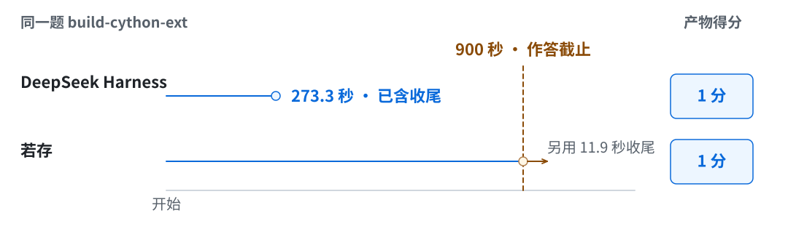

改了一版 agent，怎样知道它有没有进步？
两套 agent 都交出了一份能通过裁判的 Python 扩展。DeepSeek Harness 正常结束，含收尾用了 273.3 秒。若存到 900 秒作答上限被停下，另用 11.9 秒收尾。打开整张成绩单，两边各做三道题，还都是 3/3。如果你负责下一版，凭这张表能定下什么？
同样的一分，两个停止原因
看这道 build-cython-ext。裁判在作答结束后检查工作区，若存到点时已经留下合格的编译产物，因此照样拿了 1 分。这一分和超时一起留在了运行记录里。

假如验收只问“截止时能不能加载这个扩展”，同得 1 分很合理。把用户要求换成“限时内自行交付并给出使用说明”，评分表就得再读进程终态和最后一次回复。编译已经对了，准时交付仍可能没发生。这是同一趟运行里两条独立的观察。
这组实测做于 2026 年 11 月 14 日。两套程序用同一个 Flash1017，分别跑日志汇总、内存故障修复和编译扩展。每题两边各从相同的起点启动独立容器，用同一份裁判，每方每题只跑一次。它能告诉我们两套程序在这三种任务上的实际表现。要问下次还会不会这样，先从干净起点重跑同一题，再去更多没见过的任务上查覆盖范围。
一道题要让改动有机会出场
把比较缩到一处能单独换掉的设计。设想 可靠编辑篇 的旧版编辑器会替换第一处相同的旧文本。新版遇到两处时，先退回一句“请多给一点周围的原文”。要知道这个改动值不值，得让它有机会挡住一次误改，也得给它一次本来就能顺利写入的机会。
第一份文件把普通价和会员价写在两个函数里，两个函数用了同一行乘法。第二份只让目标那行出现一次。第三份换个结构，会员价另走会员服务，留到两版都定好再拿出来。每份题都保留起始文件、用户要求和预先写好的判定条件，这样第二天只换编辑规则，就能做同一道题。
翻到两份记录第一次改道的地方
现在给新旧版本各一份一样的工作区。同一个模型、提示、工具、时间和停止规则，只切换“遇到多处旧文怎么办”。模型的下一步有波动，同一题可以各跑多次。上一趟改过的文件、写过的摘要和存下的记忆也会改变起点，复跑前要让两边回到约定的同一份状态。
这次三题实测是两套完整程序的比较，双方的提示、工具和发给模型的消息组织都可能不同。独立容器能隔开文件，服务端缓存仍使用同一账户当时的状态，实验按题交替谁先跑。想只研究编辑规则或冷启动耗时，要针对那个问题另定控制条件。
先并排读一对推演记录。两版都读到了同一个文件，也都把那行重复的乘法交给 Edit。旧规则改了第一处，写到了会员函数。新规则先回“有两处，请补周围原文”，模型多带一行函数声明再来，于是“普通价打九折”才落到了对的地方。这个分歧能解释本题成绩为什么会变。如果两边在调用 Edit 前就找错了文件，那份失败照样入表，但要往更早的位置查。
再看四道题的示意结果。两题一直通过，一题从错变对，另一题从对变错，两版都是 3/4。重复旧文的保护确实可能救了一题；原本普通价正常的另一种入口也可能慢了几步，遇到期限没交出结果。把题号和每次结果并排保留下来，两种变化都会从平均分里露出来。哪些题值得继续修，可以再按真实入口的使用量和失败代价来判断。
同一道题，钱花在了哪一行？
把账本翻到日志汇总题，两边都得 1 分。第 15 章已经拆过 前缀命中和用量字段，这里直接拿回包里累计的数量来算。若存请求 21 次，送入 476,613 个 token，命中 94.99%，有 23,877 个输入要按未命中价计。DeepSeek Harness 请求 10 次，输入 120,739 个，命中 88.10%，未命中输入只有 14,371 个。两份分母不同，所以百分比更漂亮的一边也可能交出更多高价输入。
按当时的峰价，每百万个命中输入、未命中输入和输出分别是 0.04、2、8 元。这道题若存还输出了 6,152 个 token，代进去约是 0.11508 元，另一边约 0.06739 元。费用是历史用量按当时价格估算，范围包含各自的辅助请求。
（452,736 × 0.04 + 23,877 × 2 + 6,152 × 8）÷ 1,000,000 ≈ 0.11508 元
查看三道题的用量和费用
2026 年 11 月 14 日，两边各做每道题一次。若存用当时的 Windows MXC 桌面版，DeepSeek Harness 用 0.2.2-rc.2。题面、模型和裁判相同。表里计入各自的辅助请求，输入、命中、未命中和输出的单位都是 token。命中率用总命中量除以总输入量。
| 题目 | 产品 | 得分 | 请求数 | 总输入 | 命中输入 | 未命中输入 | 输出 | 命中率 | 峰价估算（元） |
|---|---|---|---|---|---|---|---|---|---|
| log-summary-date-ranges | 若存 | 1 | 21 | 476,613 | 452,736 | 23,877 | 6,152 | 94.99% | 0.11508 |
| log-summary-date-ranges | DeepSeek Harness | 1 | 10 | 120,739 | 106,368 | 14,371 | 4,299 | 88.10% | 0.06739 |
| custom-memory-heap-crash | 若存 | 1 | 75 | 3,721,537 | 3,673,856 | 47,681 | 41,812 | 98.72% | 0.57681 |
| custom-memory-heap-crash | DeepSeek Harness | 1 | 42 | 2,004,070 | 1,949,056 | 55,014 | 37,993 | 97.25% | 0.49193 |
| build-cython-ext | 若存 | 1 | 141 | 5,996,450 | 5,915,008 | 81,442 | 64,258 | 98.64% | 0.91355 |
| build-cython-ext | DeepSeek Harness | 1 | 64 | 2,231,701 | 2,192,768 | 38,933 | 20,783 | 98.26% | 0.33184 |
| 三题合计 | 若存 | 3/3 | 237 | 10,194,600 | 10,041,600 | 153,000 | 112,222 | 98.50% | 1.60544 |
| 三题合计 | DeepSeek Harness | 3/3 | 116 | 4,356,510 | 4,248,192 | 108,318 | 63,075 | 97.51% | 0.89116 |
按这次实验的峰价，每百万命中输入、未命中输入、输出分别为 0.04、2、8 元，输出包含思考。Cython 题中，若存在 900 秒截止时已留下通过裁判的产物。这六次作答都没有触发自动摘要。
换成“平均交付一单要花多少”时，失败的请求也要算。十单跑了 2 元，成功八单，就按 2 元除以八单，得到 0.25 元一单。若仍用总尝试数作分母，那回答的是每次尝试的费用。先说清楚测哪个问题，再给数字。
时间或费用到点，成绩怎么记？
回到开头的 Cython 题。裁判对产物给 1 分，运行记录写“到达 900 秒作答上限”。若承诺还包含主动答复，这一项看实际记录判定。再换一种情形，容器都没启动，而且裁判也无法运行。这次应留下设施失败和日志；重跑按事先定的规则进行，把每次尝试与重跑原因都记下来。这样复核的人能分辨题目做错了，还是根本没得到可评分的运行。
作答快结束时，任务还差一次模型答复，费用却过了门槛。只想让操作者知道已经花了多少，可以提醒后接着做。需要在发现超支后拦住下一笔费用，就打开硬预算。假设门槛是 1 元，当前进程已花 1.03 元，两种设置都会在下一次请求前检查这笔费用。
src/ruocun/agent/loop.py · 第 237、241–247 行（节选，中间省略轮数检查）
if boundary:
if session.overBudget():
if not budget_warned and notice:
notice(f"[成本提醒] 本次进程费用约 ¥{session.costCNY():.2f}，已达阈值 ¥{session.budgetCNY}。")
budget_warned = True
if policy.budget_hard:
await save()
return TurnResult("budget_limit", "已达显式硬预算上限，本轮停止。")开启硬预算时，1.03 元已经记账，程序会挡住下一次请求；只设门槛时，这条路径发过提醒还可能继续。重开旧会话可以恢复累计 token，本进程的费用预算只累计新发生的费用。比较两版能不能在同样的开销下交付，停止规则和费用范围也要相同。只对齐“1 元”这个数字，两边能继续作答的机会可能不同。
所以两次运行都出现了成本提醒，单凭这条提醒还看不出谁停下了。已有用例给两边相同的首个模型回复，让费用一起越过门槛，只切换硬预算开关。两边各发一次提醒，开启硬预算的一边共发一条请求就返回 budget_limit，另一边发完三条并正常完成。软硬预算的对照断言
评审时只有一张 7/10 和 9/10 的表
假设同事拿来一张表：“上周 7/10，这周 9/10，可以合并。”你问了三句，发现这周同时换了模型、调过编辑规则，还用这十道题来挑提示。面对这张表，你愿意对面试官报告哪个结论？如果只能再安排一批对照，你选哪些任务、保持什么不变，要留下哪些记录？
对照自己的判断
可以报告两个组合在这十道已看过的题上分别通过 7 道和 9 道。先拿相同题号对齐：哪几道从失败变成功？有没有一道原先能过现在反而失败？再看这几道两版的执行记录。直接相减得到的两道净增，不能告诉我们是哪次改变带来的。
如果要评编辑规则，就固定模型和提示，从相同工作区开始，只切换旧规则和新规则。加入未参与挑提示的相似任务和旧版原先能过的普通任务，每题各跑多次。记录每次裁判结果、停止原因、用时与费用。如果团队关心“切成新模型以后这条规则才奏效”，就要再用新模型把两种规则分别跑一遍。
这一章带走什么
- 裁判的一分只回答它实际查过的事。900 秒截止时已经留下合格的扩展，裁判检查产物后给了 1 分。要确认 agent 有没有在限时内自行交付，还要看进程怎么结束、最后的回复有没有交代用法。
- 想知道一条编辑规则值不值，就从同一份工作区出发，保持模型、提示和裁判相同，只换这条规则。逐题看谁改善、谁退步。要看结果稳不稳，就从干净起点重跑。调过的题留作回归，用没参与调试的题看办法还能管到哪儿。
- 费用要带上分母和停止条件。十次尝试花了 2 元，交付八单，按每次交付算就是 0.25 元。两版做到什么时候才停，也要按同一个约定。
回到第一章那次读文件。要查模型为什么这么答，先找它当时拿到的那条回包。要查裁判为什么给分，也先翻它实际跑过的判定。面试说到一个设计时，拿一次这样的记录讲清是谁作了决定、凭什么作决定，最后的结果又能证明到哪一步。
面经自测
怎么设计基准用例和指标，判断一次改动是否让 agent 的效果变好了？
未具名 B 端公司 · 项目面 · 面经原帖 · 题意转述
展开参考回答
我先说清希望这次改动少犯哪一种错。从真实任务里挑一批会碰上这个问题的例子，也放进原本做得好的任务。先写好怎么算通过，再用同一批任务、同一个模型和同一套判定条件分别跑新旧版本。每题重复几次，逐题看成功、回退和代价。
我们有一组实际记录，两套程序各跑三题，每题一次，各得 3/3。它能让我报出这六次的得分、用时和开销。想把差别归因到某个设计，我还要在同一程序里只切换这项设计，用独立留出的题复核。
除了功能正确，还用哪些指标看性能和成本？
展开参考回答
我会把用户等了多久、跑了多少次请求、花了多少钱与通过情况放在一起看。失败和超时的消耗也算进去。对照费用时统一模型、计价时段和计入的请求。
平均分涨了，怎样找出具体哪个环节起了作用？
展开参考回答
我先找出同一题在两个版本里结果不同的运行，对齐用户要求、工具反馈、最后的产物和裁判理由。从第一处能解释失败的分歧往回查，再只切换那个设计复跑。
怎样避免修好几道已知错题，就以为对新任务也有效？
展开参考回答
修过的题留下做回归，再留一批调试时没看过的题。两批分别报告；保留旧版原先能做对的任务，才能发现改完以后倒退了哪里。
两套程序各做三道题，都拿到 3/3，能宣布它们一样稳定吗？
若存设计题
展开参考回答
日志汇总题里，为什么命中率更高的一方反而花得更多？
若存设计题
展开参考回答
要看实际付钱的 token 数量。
这次若存的命中率是 94.99%，但一共送入 476,613 个 token，未命中的有 23,877 个。另一套程序的未命中数是 14,371。再分别计入命中输入和输出，前者这道题的峰价估算更高。
一次作答碰到时间或费用上限，评测表上的“通过”应该怎样填？
若存设计题
展开参考回答
我会分别记下产物得分和停止原因，再按事先约好的交付要求判定整单。
这次 Cython 题到了 900 秒，裁判仍给已有产物 1 分，运行记录还得写“超时”。若要求程序自行在限时内交付，就另记这一项未达成。费用阈值也要注明是只提醒还是会停止。